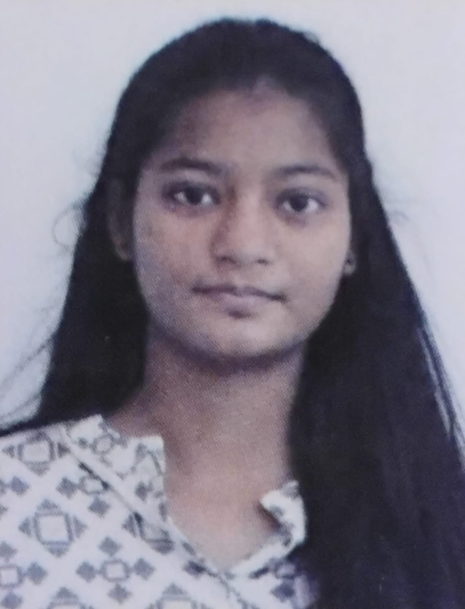

ALERTNESS
MONITOR
MONITOR
Smart Driver Monitoring System
Real-time drowsiness detection through facial landmark detection and eye movement analysis.
PythonOpenCVDlibEAR · PERCLOS

HELLO, THERE
A small window into my learning journey, projects, and the things I’m curious about.
Demo login · any non-empty values work
/ COMPUTER SCIENCE & TECHNOLOGY
I’m Gatla Sathvika — an aspiring software engineer exploring the intersection of code, data, and thoughtful problem-solving.
01 / PROFILE
Aspiring Software Engineer with hands-on experience in Java, Python, OpenCV, SQL, and Tableau through academic projects and hackathons. I’m eager to contribute to meaningful solutions while continuing to learn, experiment, and grow.
02 / ACADEMIC DETAILS
| Course | Institution | Year | Result |
|---|---|---|---|
| 0110th / Secondary Education | Kerala English Medium High School Jagital, Telangana | Jun 2021 — Mar 2022 | 95% |
| 0212th / Intermediate | Alphores Junior College Hyderabad | Aug 2022 — Apr 2024 | 97.6% |
| 03B.Tech · 1st & 2nd Year | BVRIT Hyderabad College of Engineering for Women Computer Science & Technology | Nov 2024 — Jun 2028 | 8.75 GPA |
B.Tech result shown as the current cumulative GPA from the supplied resume; year-wise scores were not provided.
03 / SELECTED WORK
Real-time drowsiness detection through facial landmark detection and eye movement analysis.
A Java-based GUI for converting between multiple international currencies through an intuitive interface.
An interactive GUI game with a hint system, countdown timer, real-time score tracking, and file handling.
04 / TOOLKIT
From a clean query to a well-timed interface, I enjoy learning how the pieces fit together.
STAYJava · Python · C · MySQL · Tableau
Git · Linux · Windows · Arduino · Raspberry Pi · VS Code · Eclipse · Google Colab · Excel
Database Management Systems · Operating Systems · Internet of Things
Project Management · Time Management · Delegation
05 / CREDENTIALS
Scaler · Certificate of Excellence
CodeChef
Wolfram U · Completion Certificate
Infosys Springboard · HTML5, CSS3, JavaScript
AI fundamentals · Planning · Research · App Building
06 / HACKATHONS & IDEathons
BVRITH · Designed for urban local bodies
BVRITH · Tableau dashboard
BVRITH · Sustainable meal recommendations
No personal audio/video was supplied — this mode uses animated portfolio visuals only.
07 / CONTACT
Open to internships, collaborative projects, and conversations about building with purpose.